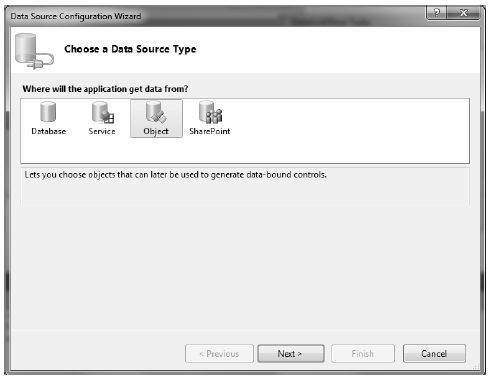

To conclude this introductory examination of the ADO.NET Entity Framework, you will create a simple example where you bind entity objects to a Windows Forms GUI. As mentioned earlier in this chapter, you will examine data-binding operations in WPF and ASP.NET projects.
Create a new Windows Forms application named AutoLotEDM_GUI and rename your initial form to MainForm. After you create the project (and similar to the previous client application you created), you set a reference to System.Data.Entity.dll and the latest and greatest version of AutoLotDAL.dll. Next, insert the App.config file from your AutoLotDAL project (using the Project > Add Existing Item menu option) and import the AutoLotDAL namespace into your Form’s primary code file.
Now add a DataGridView object to the form designer and rename the control to gridInventory. Once you place this control on the designer, select the inline grid editor (the tiny arrow on the upper right of the widget). From the Choose Data Source dropdown box, add a project data source (see Figure 23-24).
Figure 23-24 Designing the Windows Forms DataGridView control
In this case, you do not bind directly to the database; instead, you bind to an entity class, so pick the Object option (see Figure 23-25).
Figure 23-25 Binding to a strongly typed object
In the final step, check off the Inventory table of AutoLotDAL.dll as shown in Figure 23-26 (if you don’t see it listed, you probably forgot to reference this library).
Figure 23-26 Selecting the Inventory table
Once you click the Finish button, you’ll see that the grid displays each property of the Inventory entity class, including the navigation properties! To remove them from the grid, activate the inline editor again (that tiny little arrow) and this time click the Edit Columns... link. Select the Orders column in the Edit Columns dialog and remove it from view (see Figure 23-27).
Figure 23-27 Cleaning up the grid’s UI
To finish the UI, add a single Button control and rename it to btnUpdate. At this point, your designer should look something like what you see in Figure 23-28.
Figure 23-28 The final UI
At this point, you have a grid that can display any number of Inventory objects; however, you need to write the code to do so. Thanks to the runtime engine of the EF, the code could not be simpler. Begin by handling the FormClosed and Load events of your MainForm class (using the Properties window) and the Click event of the Button control. Once you do this, update your code file with the following snippet:
public partial class MainForm : Form { AutoLotEntities context = new AutoLotEntities(); public MainForm() { InitializeComponent(); } private void MainForm_Load(object sender, EventArgs e) { // Bind the ObjectSet<Inventory> collection to the grid. gridInventory.DataSource = context.Inventories; } private void btnUpdate_Click(object sender, EventArgs e) { context.SaveChanges(); MessageBox.Show("Data saved!"); } private void MainForm_FormClosed(object sender, FormClosedEventArgs e) { context.Dispose(); } }
This is all you need to do! If you run your application, you can now add new records to the grid, select a row and delete it, and modify existing rows. When you click your Update button, the Inventory database is updated automatically because the object context has been kind enough to generate all the necessary SQL statements for selecting, updating, deleting, and inserting automatically. Figure 23-29 shows the completed Windows Forms application.
Figure 23-29 The completed application
Here are some key takeaways from this preceding example:
That wraps up this chapter’s examination of the ADO.NET Entity Framework. While there is so much more to this programming model than this chapter can address, you should now have a solid understanding about what problems EF attempts to solve and how to work with the overall programming model. Be sure to consult the .NET Framework 4.0 SDK documentation for more details of this slick data programming API.